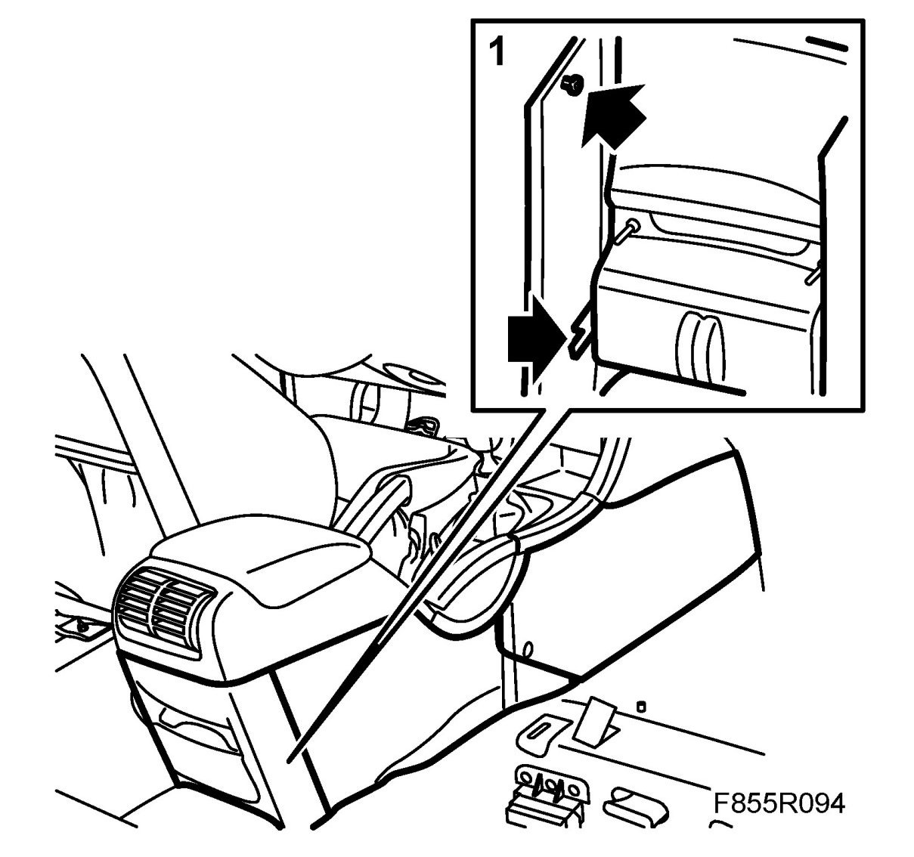
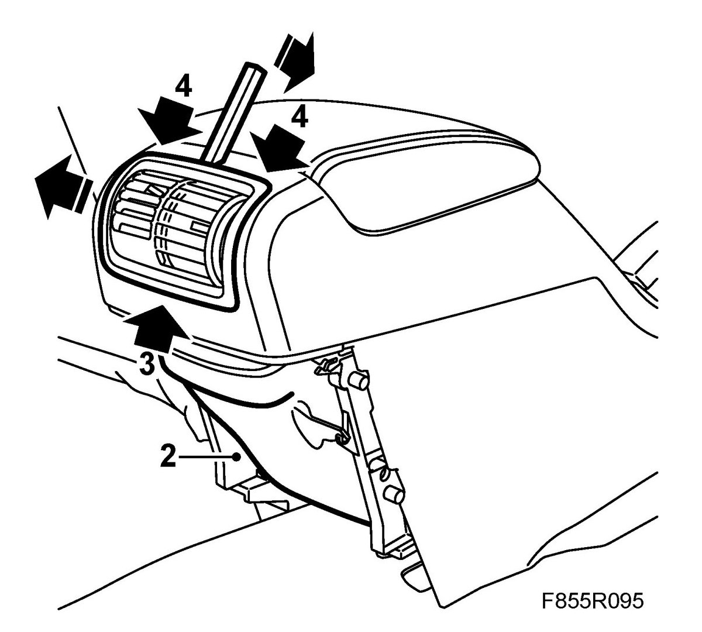
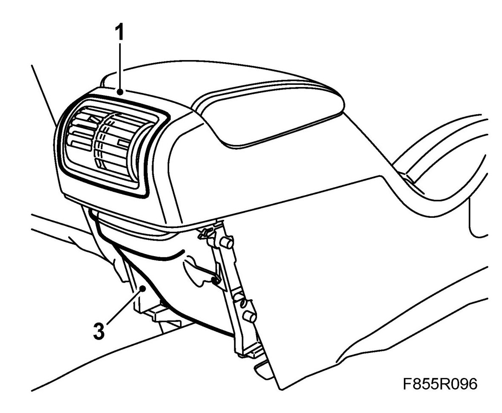
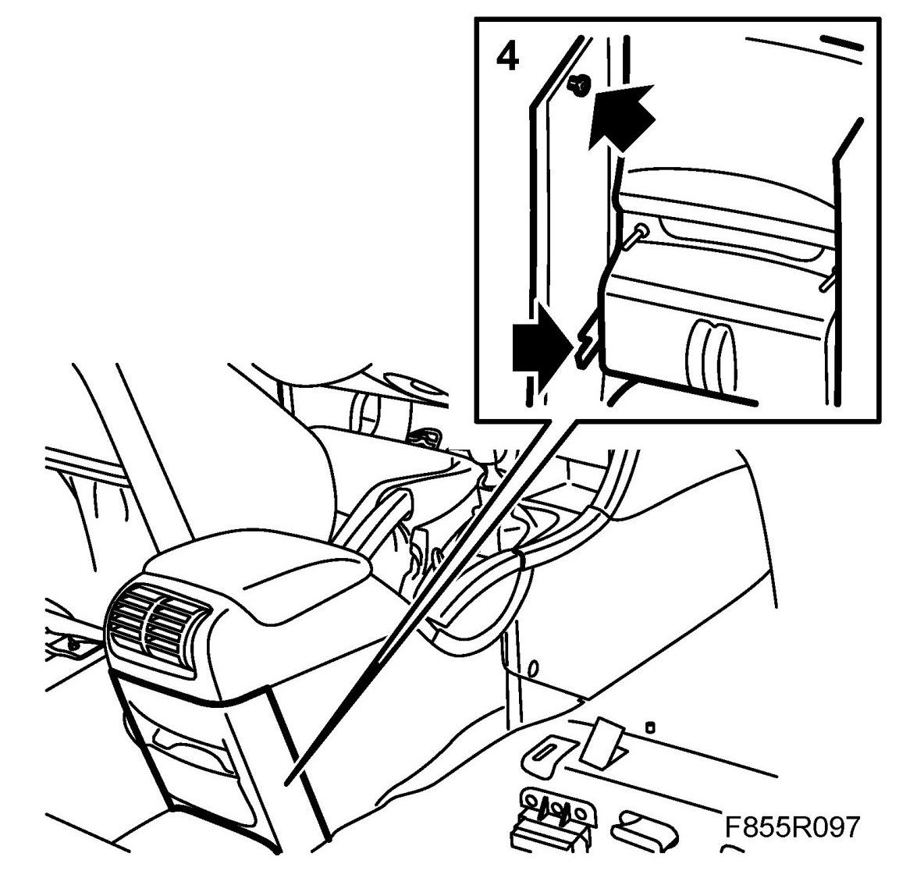

Rear Panel Vent
Rear Panel Vent
To remove
1. Remove the rear panel from the centre console by pulling it straight backwards.

2. Detach the air duct from its mounting so that it comes away from the panel vent.

3. Press the bottom edge of the panel vent so as to free the lower locking tabs.
4. Push down the locking tabs on the upper edge of the panel vent with 82 93 474 Removal tool.
5. Lift out the rear panel vent.
To fit
1. Position the rear panel vent.

2. Push the panel vent straight in. Make sure that the locking tabs are properly engaged.
3. Attach the air duct to its mounting.
4. Refit the rear panel to the centre console.
